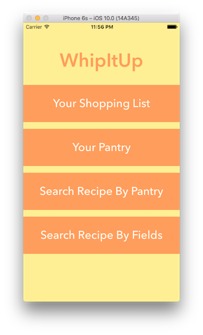

Creative Accomplishments
Senior Project: WhipItUP
For my senior year I am working on creating an ios app that uses php scripts in order to retrieve and send data to a mysql database. This app allows the user to search recpes based on many more preferences than just a key word. They cankeep track of their kitchen items and create searches based on what they have. They can also create a shopping list based on the accumlulation of recipes they decide to use for the week. If they are new to the area, they can also use the app to track the closest markets in Austin, TX. From this project Im learning Swift, how to create and use a web service to use a database, and how to create an ios app using Xcode.Click Here for more information.
